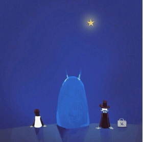

发现，越来越多人关注到理财的重要性，而大部分的理财产品都是针对于个人借贷。而我们只做最优质的最安全 的央企国企项目。 椰子理财平台上所有的项目都来源于央企、国企保理项目，风控更严格，亿级担保更有保障！
这部漫画的主题是超强的食欲，追求还没看到的美味，美食家的传奇，虽然也属于“美食”漫画作品，但是和过去重点摆在“料理”食物的“厨师”身上的美食漫画不同，美食的俘虏的世界是一个充满超乎想像的珍奇食材的‘美食世界’。例如全身的肉在舌间融化并且浮出一层油的的野兽，一整年都结有美味虾蟹肉的树、流出源源不绝的香醇白兰地涌泉的泉水等等。主要的故事剧情，就是在大自然中亲手“捕获”这些活生生的珍肴时所经历的刺激冒险和成功捕获美味食材后将其调理成美味料理加以享用时的那份“吃的幸福”。 但是这些美味的食材不是活体时是凶猛无比的怪物，就是生长在环境恶劣的天险之地，甚至是在人类认知之外的地方。因此在这个探求未知美味的美食时代里，有许多专门深入绝地，拼上性命捕获珍稀美味的“美食猎人”。每个美食猎人的人生目标就是用自己亲手捕获的食材完成包含前菜、汤、鱼、肉、主菜、沙拉、甜点、饮料一共8道料理的“人生菜单”，而本作便是美食猎人中的世界级精英——美食猎人“四天王”之一的阿虏为了完成自己的全餐菜单，和潜力无穷的年轻厨师小松一同在美食世界出生入死，寻找珍奇美食的旅程所写下的精彩热血物语。[1]
